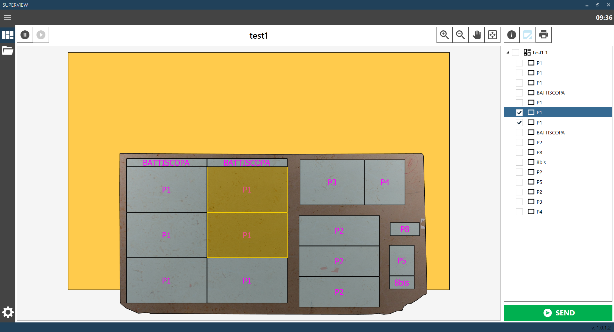
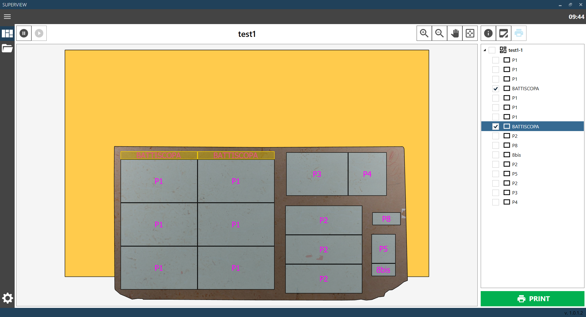
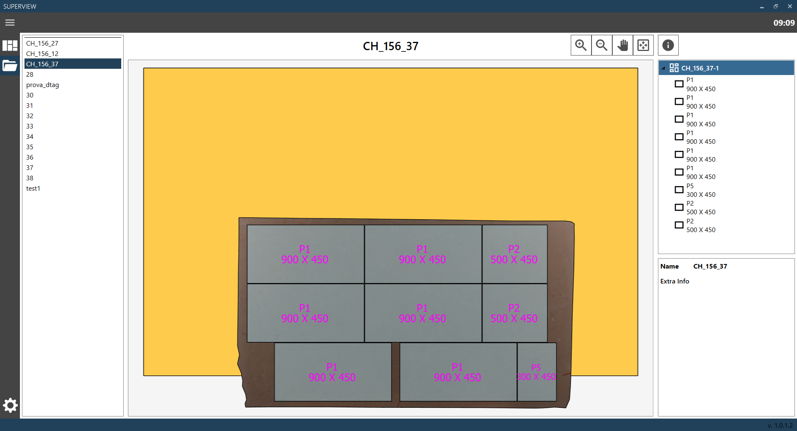

EN-GB SUPERVIEW 1.0.1.0
Superview software manual
A publication by Donatoni Macchine S.r.l.
Software Version: 1.0.1.0
Manual Version: 1.0
Date: 23/02/2026
1 INFORMATION
Page that allows viewing the current cutting configuration present in the unloading area.

There is a viewing window where it is possible to view the bench with the slabs executed along with the respective pieces. To the right there is a list of slabs and displayed pieces, and below a panel with the information of the selected object. It is possible to select a slab or a piece by clicking directly on the desired object in the viewing window, or on the object's name in the list to the right.
 | Increase zoom |
 | Reduce zoom |
 | Drag mode |
 | Reset default view |
 | Stop reception |
 | Start reception |
 | Display information |
 | Select broken pieces |
 | Print labels |
 | Confirm |
2 BROKEN PIECES NOTIFICATION
This mode of the Current Configuration page allows selecting one or more pieces and marking them as broken.

The notification will arrive at the properly configured Parametrix software, which will allow reinserting the pieces for a new execution.
This function is optional and must be set correctly, or disabled.
It is possible to select the pieces to be marked directly from the viewing window, or by selecting the piece checkbox in the list on the right.
Selecting a slab checkbox will select all pieces of that slab.
The notification of broken pieces can be performed only once for the cut configuration, and once sent it cannot be modified.
 | Report broken pieces |
3 PRINT LABELS
This mode of the Current Configuration page allows selecting one or more pieces and printing their labels.

This optional function must be properly configured or disabled. It is possible to select the pieces for which to print labels directly from the viewing window, or by selecting the piece checkbox in the list on the right. Selecting a slab checkbox will select all pieces of that slab.
Print labels |
4 OPEN CONFIGURATION
This page allows viewing the list of previous cutting configurations and reopening them.

To select a previous cutting configuration, simply select it from the left list.